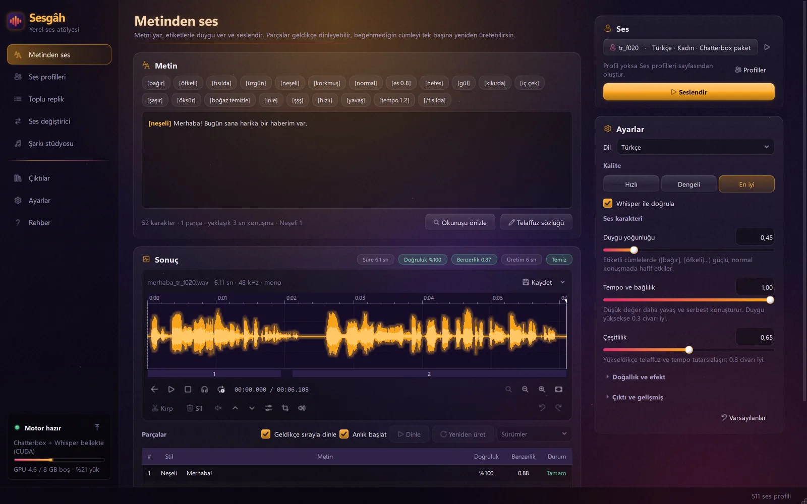

Sesgâh reads your text the way a person would: it laughs, whispers, shouts and sighs — in 500+ ready voices, in 23 languages, or in your own voice from a 10-second recording. It also writes songs from your lyrics and changes your voice live. Everything runs on your own graphics card and works offline: no account, no credits.
Sesgâh yazdığın metni bir insan gibi okur: güler, fısıldar, bağırır, iç çeker. 500'den fazla hazır sesle, 23 dilde ya da 10 saniyelik kaydınla kendi sesinle. Sözlerinden şarkı yapar, sesini canlı değiştirir. Her şey kendi ekran kartında, internetsiz çalışır: hesap yok, kredi yok.
The name: ses (voice) + -gâh, Persian for “place”, as in the makam names Segâh and Çârgâh. “The place of voice.”
Adı: ses + Farsçadan gelen -gâh (“yer”; Segâh, Çârgâh makamlarındaki gibi). “Sesin yeri.”

PromoTanıtım
Every voice in this video is Sesgâh.
Bu videodaki bütün sesler Sesgâh.
16 voices, 8 languages, 6 emotions and a song, all generated on one PC and checked line by line with Whisper.
16 ses, 8 dil, 6 duygu ve bir şarkı: hepsi tek bir bilgisayarda üretildi, satır satır Whisper'la dinlendi.
2:41 · 1080p · Turkish narration with on-screen subtitles2:41 · 1080p · Türkçe anlatım, ekranda altyazıMusic: cynicmusic, Ruskerdax (CC0) · full creditsMüzik: cynicmusic, Ruskerdax (CC0) · tam künye
FeaturesÖzellikler
Everything a voice needs, in one window
Bir sesin ihtiyacı olan her şey tek pencerede
Text to speech, a voice library, batch lines, a voice changer and a song studio share one engine and one graphics card. Heavy models load in a separate engine process, stay warm while you work and free the graphics card after 15 idle minutes.
Metinden ses, ses kütüphanesi, toplu replik, ses değiştirici ve şarkı stüdyosu aynı motoru ve aynı ekran kartını paylaşır. Ağır modeller ayrı bir motor sürecinde yüklenir, çalışırken sıcak kalır, 15 dakika boşta kalınca ekran kartını boşaltır.
Speech with emotionDuygulu metinden ses
Write naturally and add tags like [shout], [whisper] or [sad]. Built on Chatterbox Multilingual. For shouting, anger, joy and fear, if a voice has no recording of its own, real actor performances are converted into that voice and used as the emotion example.
Doğal yaz, [bağır], [fısılda], [üzgün] gibi etiketler ekle. Chatterbox Multilingual üzerine kurulu. Bağırma, öfke, neşe ve korku için sesin kendi kaydı yoksa gerçek oyuncu kayıtları o sesin tınısına çevrilip duygu örneği olarak verilir.
A real whisper, real laughsGerçek fısıltı, gerçek kahkaha
Whispers are rebuilt without pitch, so they sound breathy instead of just quiet. Laughs, chuckles, sighs, gasps and coughs are added in the voice's own timbre.
Fısıltı perdesiz, nefesle yeniden kurulur; kısık konuşma gibi değil gerçek fısıltı gibi duyulur. Gülme, kıkırdama, iç çekme, şaşırma ve öksürme sesin kendi tınısıyla eklenir.
Every sentence checkedHer cümle denetlenir
Each sentence is generated as 1, 2 or 4 candidates. Whisper listens, scores the pronunciation of every word and keeps the most accurate, natural take. Cut-off or slurred takes are regenerated automatically.
Her cümle 1, 2 ya da 4 aday olarak üretilir. Whisper dinler, her kelimenin telaffuzunu puanlar, en doğru ve en doğal olanı seçer. Kesik ya da kayan okumalar kendiliğinden yeniden üretilir.
Instant startAnlık başlat
You hear the first word 0.3–0.5 s after pressing Speak, while the rest is still being generated. If a streamed take fails the check, it is cut off and replayed from the verified take.
Seslendir'e bastıktan 0,3-0,5 sn sonra ilk kelime duyulur, kalanı üretilirken çalar. Akışla çalınan aday denetimden geçemezse kesilir, doğrulanmış hâliyle yeniden çalınır.
500+ ready voices500'den fazla hazır ses
230+ Turkish and 230+ English voices, plus native voices in 11 more languages. Search, preview, filter by language and gender, record with your mic or drop in a file.
230'dan fazla Türkçe ve 230'dan fazla İngilizce ses, 11 dilde daha ana dili ses. Ara, dinle, dile ve cinsiyete göre süz, mikrofonla kaydet ya da dosya sürükle.
Your own voiceKendi sesin
A clean 10–20 second recording is enough, no training needed. Timbre, pitch and “s” matching keep the result close to the recording, and every recording gets a quality score.
10-20 saniyelik temiz bir kayıt yeter, model eğitmek gerekmez. Tını, perde ve s sesi eşleme sonucu kayda yakın tutar; her kaydın kalite puanı görünür.
Songs from lyricsSözlerden şarkı
Write lyrics and pick a style: pop, ballad, arabesque, folk, rock, rap, EDM, jazz, cinematic, lo-fi and more. ACE-Step 1.5 composes, Whisper picks the variant with the clearest lyrics, and the vocal is converted to your chosen voice, mixed and mastered.
Sözleri yaz, tarzı seç: pop, balad, arabesk, halk müziği, rock, rap, elektronik, caz, sinematik, lo-fi ve dahası. ACE-Step 1.5 besteler, Whisper sözleri en net okunan varyantı seçer, vokal seçtiğin sese çevrilir, miks ve mastering yapılır.
Song coversŞarkıyı sese çevir
Separate the vocal from a song, remove reverb and backing vocals, convert it to a voice (Seed-VC, YingMusic-SVC or your RVC models through Applio), check it against the lyrics and mix it back.
Şarkının vokalini ayır, yankıyı ve arka vokali temizle, bir sese çevir (Seed-VC, YingMusic-SVC ya da Applio'daki RVC modellerin), sözlerle kontrol et, geri miksle.
Live voice changerCanlı ses değiştirici
Speak into your mic and come out as another voice with about 0.27–0.4 s of latency. Send it to headphones or to a virtual cable for Discord and OBS.
Mikrofona konuş, başka bir sesle çık: gecikme yaklaşık 0,27-0,4 sn. Kulaklığa ya da Discord ve OBS için sanal kabloya gönder.
Batch linesToplu replik
Hundreds of game or video lines, each with its own voice and emotion, generated in one go from a .txt or .csv file, with duration and score for every line.
Oyun ya da video için yüzlerce replik; her biri kendi sesi ve duygusuyla, .txt ya da .csv dosyasından tek seferde. Her satırın süresi ve puanı görünür.
Turkish-first text handlingTürkçe metin hazırlığı
Numbers, ordinals, Roman numerals, times, fractions, phone numbers, units and abbreviations are read the Turkish way (TBMM → “te be me me”, 14.30'da → “on dört otuzda”). Add your own words to the pronunciation dictionary.
Sayılar, sıra sayıları, Roma rakamları, saatler, kesirler, telefonlar, birimler ve kısaltmalar Türkçe okunur (TBMM → “te be me me”, 14.30'da → “on dört otuzda”). Kendi kelimelerini telaffuz sözlüğüne ekle.
Local APIYerel API
Other apps on the same computer, such as SosyalStudyo, can list Sesgâh's voices and voice their scripts through a token-protected API that only listens on 127.0.0.1.
Aynı bilgisayardaki uygulamalar (ör. SosyalStudyo) Sesgâh'ın seslerini listeleyip metinlerini seslendirebilir. API yalnızca 127.0.0.1'i dinler ve anahtar ister.
EmotionsDuygular
Tell it how to feel
Nasıl hissedeceğini sen söyle
Wrap any part of your text in a tag. Tags work in every language and can be written in Turkish or English. Each emotion has its own loudness, so a shout really is louder than a whisper.
Metnin istediğin kısmını bir etiketle sar. Etiketler her dilde çalışır, Türkçe ya da İngilizce yazılabilir. Her duygunun kendi ses düzeyi var: bağırma fısıltıdan gerçekten yüksek.
JOYNEŞE[neşeli][happy]Pitch rises, the voice brightens.Perde yükselir, ses parlaklaşır.
SADNESSHÜZÜN[üzgün][sad]Softer, slower, quieter.Daha yumuşak, yavaş ve alçak.
ANGERÖFKE[öfkeli][angry]Tense, sharp and 3 dB louder.Gergin, sert ve 3 dB yüksek.
FEARKORKU[korkmuş][scared]Higher and a little faster.Daha ince ve biraz daha hızlı.
WHISPERFISILTI[fısılda][whisper]Breath only, no pitch.Yalnız nefes, perde yok.
SHOUTBAĞIR[bağır][shout]Full effort, 5 dB louder.Tam efor, 5 dB yüksek.
[happy] We won! I can't believe it, we actually won! [laugh][whisper] Don't tell anyone... this stays between us. [/whisper][shout] Everybody out, now! [/shout][sad] I just wanted to hear your voice once more. [sigh][pause 0.8][slow] Goodbye.
[neşeli] Kazandık! İnanamıyorum, gerçekten kazandık! [gül][fısılda] Sakın kimseye söyleme... bu aramızda kalsın. [/fısılda][bağır] Herkes dışarı, hemen! [/bağır][üzgün] Gitmeden önce sesini bir kez daha duymak istedim. [iç çek][es 0.8][yavaş] Hoşça kal.
Sounds without wordsSözsüz sesler
[gül]laughgülme
[kıkırda]chucklekıkırdama
[iç çek]sighiç çekme
[şaşır]gaspşaşırma
[öksür]coughöksürük
[boğaz temizle]clear throatboğaz temizleme
[inle]groaninleme
[şşş]shhsusturma
[nefes]breathnefes
English names work too: [laugh][sigh][cough][pause 0.8][fast][slow]. Laughs come from public-domain (CC0) human recordings converted into the chosen voice, or are generated with Chatterbox Turbo; an audio classifier keeps the most convincing takes. “Shh” is synthesized.
İngilizce adlar da çalışır: [laugh][sigh][cough][pause 0.8][fast][slow]. Kahkahalar kamu malı (CC0) gerçek insan kayıtlarının seçilen sese çevrilmesiyle ya da Chatterbox Turbo ile üretilir; bir ses sınıflandırıcı en inandırıcılarını seçer. “Şşş” sentezlenir.
LanguagesDiller
23 languages
23 dil
Speech works in all 23 languages of Chatterbox Multilingual. Turkish and English have hundreds of ready voices, and 11 more languages come with 2–4 native voices each. In the other 10 you can use any voice (its accent may carry over) or clone a native speaker from a 10-second recording.
Konuşma, Chatterbox Multilingual'ın 23 dilinin hepsinde çalışır. Türkçe ve İngilizcede yüzlerce hazır ses var, 11 dilde daha 2-4 ana dili ses hazır. Kalan 10 dilde istediğin sesi kullanabilir (aksanı taşınabilir) ya da 10 saniyelik kayıtla ana dili bir sesi klonlayabilirsin.
tr
Türkçe
TurkishTürkçe
230+ voices230+ ses
en
English
Englishİngilizce
230+ voices230+ ses
ar
العربية
ArabicArapça
3 voices3 ses
zh
中文
ChineseÇince
4 voices4 ses
fr
Français
FrenchFransızca
3 voices3 ses
de
Deutsch
GermanAlmanca
4 voices4 ses
hi
हिन्दी
HindiHintçe
4 voices4 ses
it
Italiano
Italianİtalyanca
4 voices4 ses
ja
日本語
JapaneseJaponca
2 voices2 ses
ko
한국어
KoreanKorece
3 voices3 ses
pt
Português
PortuguesePortekizce
4 voices4 ses
ru
Русский
RussianRusça
4 voices4 ses
es
Español
Spanishİspanyolca
4 voices4 ses
da
Dansk
DanishDanca
any voice or cloneher ses ya da klon
nl
Nederlands
DutchHollandaca
any voice or cloneher ses ya da klon
fi
Suomi
FinnishFince
any voice or cloneher ses ya da klon
el
Ελληνικά
GreekYunanca
any voice or cloneher ses ya da klon
he
עברית
Hebrewİbranice
any voice or cloneher ses ya da klon
ms
Bahasa Melayu
MalayMalayca
any voice or cloneher ses ya da klon
no
Norsk
NorwegianNorveççe
any voice or cloneher ses ya da klon
pl
Polski
PolishLehçe
any voice or cloneher ses ya da klon
sw
Kiswahili
SwahiliSvahili
any voice or cloneher ses ya da klon
sv
Svenska
Swedishİsveççe
any voice or cloneher ses ya da klon
Hundreds of ready voicesYüzlerce hazır ses2–4 native voices2-4 ana dili sesUse any voice or clone oneHerhangi bir sesle ya da klonla
What works whereNe nerede çalışır
TurkishTürkçe
Englishİngilizce
Other 21Diğer 21 dil
Speech, emotion tags, sounds without wordsKonuşma, duygu etiketleri, sözsüz sesler
✓
✓
✓
Whisper check and automatic retriesWhisper denetimi ve kendiliğinden yeniden deneme
Reading numbers, dates, units and abbreviationsSayı, tarih, birim ve kısaltma okuma
✓
model's ownmodelin kendisi
model's ownmodelin kendisi
Lyrics language for songsŞarkıda söz dili
✓
✓
✓
Song covers and the live voice changerŞarkı cover ve canlı ses değiştirici
Any language: they work on sound, not on text.Her dil: metinle değil sesle çalışırlar.
InterfaceArayüz
TurkishTürkçe
ScreenshotsEkran görüntüleri
A closer look
Yakından bak
Type, pick a voice and quality, press Speak. Each part plays as soon as it's ready; the table below shows the accuracy and similarity of every sentence.Yaz, sesi ve kaliteyi seç, Seslendir'e bas. Her parça hazır olur olmaz çalar; alttaki tabloda her cümlenin doğruluğu ve benzerliği görünür.Tag buttons insert emotions and sounds where the cursor is.Etiket düğmeleri duyguyu ve sözsüz sesi imlecin olduğu yere ekler.Voice cards show language, gender and pitch, and for most voices also age, accent, source and license.Ses kartlarında dil, cinsiyet ve perde; seslerin çoğunda yaş, aksan, kaynak ve lisans da yazar.Record or drop in 10–20 seconds; add separate recordings for shouting, anger or whispering if you like.10-20 saniye kaydet ya da sürükle; istersen bağırma, öfke, fısıltı için ayrı kayıtlar ekle.Convert a recording, or press Live start to change your voice in real time.Bir kaydı çevir ya da Canlı başlat ile sesini anında değiştir.Lyrics, style, lyrics language, length and tempo; then the voice that will sing it.Sözler, tarz, söz dili, süre ve tempo; sonra şarkıyı söyleyecek ses.One line per row: ID, voice and text, with emotion tags inside the text. Finished lines show a duration and a score.Her satıra bir replik: numara, ses ve metin; duygu etiketi metnin içinde. Biten satırın süresi ve puanı yazar.
Six themesAltı tema
Frosted glass cards, glowing buttons and slowly drifting lights, in six color moods.
Buzlu cam kartlar, ışıyan düğmeler ve yavaşça kayan ışıklar; altı farklı renk havasında.
SpeedHız
Fast on an 8 GB card
8 GB kartta bile hızlı
Measured on an RTX 3060 Ti with 8 GB, through the app itself.
RTX 3060 Ti 8 GB'de, uygulamanın kendi yoluyla ölçüldü.
0.3–0.5 s
until you hear the first word (instant start)
ilk kelimeyi duyana kadar (anlık başlat)
3.3–3.8×
faster than real time: a 45 s paragraph in 11.5–13.5 s, two candidates and a Whisper check per sentence
gerçek zamandan hızlı: 45 sn'lik paragraf 11,5-13,5 sn'de, cümle başına 2 aday ve Whisper denetimiyle
32 s
to compose 40 seconds of music from lyrics
sözlerden 40 saniyelik müzik bestelemek
~3 min
for a 40-second song with 2 variants, vocal separation and voice conversion (models preload while you type the lyrics)
40 saniyelik şarkı: 2 varyant, vokal ayırma ve sese çevirme dahil (modeller sen sözleri yazarken yüklenir)
39 ms
of processing per 80 ms step in the live voice changer
canlı ses değiştiricide 80 ms'lik adım başına işlem
5.8 s
from launch until the engine is ready
açılıştan motor hazır olana kadar
Under the hoodKaputun altı
Local, private, out of your way
Yerel, gizli, ayağına dolanmaz
PrivacyGizlilik
No account, no cloud, no credits, no subscription.
Your text and audio stay on your computer.
The internet is needed only for installation and the first use of each model; after that everything works offline.
The local API listens on 127.0.0.1 only, requires a token and rejects requests from web pages.
Hesap yok, bulut yok, kredi yok, abonelik yok.
Metnin ve sesin bilgisayarında kalır.
İnternet yalnızca kurulumda ve her modelin ilk kullanımında gerekir; sonra her şey çevrim dışı çalışır.
Yerel API yalnızca 127.0.0.1'i dinler, anahtar ister, web sayfalarından gelen istekleri reddeder.
How it worksNasıl çalışır
The window opens instantly. PyTorch, Chatterbox and Whisper load in a separate engine process that restarts itself if it ever crashes.
Models stay warm between jobs and leave the GPU after 15 idle minutes (adjustable), so games and other apps get it back.
When another program fills the graphics card, Sesgâh tells you which one and how much it holds.
Background preparation of a voice pauses the moment you press Speak and resumes later.
Pencere hemen açılır. PyTorch, Chatterbox ve Whisper ayrı bir motor sürecinde yüklenir; motor çökerse kendiliğinden yeniden başlar.
Modeller işler arasında sıcak kalır, 15 dakika kullanılmazsa (ayarlanabilir) ekran kartını oyunlara ve diğer programlara bırakır.
Ekran kartını başka bir program doldurursa Sesgâh hangisi olduğunu ve ne kadar tuttuğunu söyler.
Bir sesin arka plan hazırlığı Seslendir'e bastığın anda durur, sonra kaldığı yerden sürer.
RequirementsGereksinimler
What you need
Neye ihtiyacın var
SystemSistem
Windows 10 or 11, 64-bit
NVIDIA graphics card with CUDA; 8 GB of VRAM recommended
At least 40 GB of free disk space (Python, models and caches stay inside the app folder)
Internet during installation: Python, PyTorch and the song module (about 15 GB)
Speech models download the first time they're needed: about 6 GB, up to about 9.5 GB with the Turkish letter check and non-verbal sounds
Optional: Applio for RVC models, a virtual cable such as VB-CABLE for Discord or OBS
Windows 10 ya da 11, 64 bit
CUDA destekli NVIDIA ekran kartı; 8 GB ekran belleği önerilir
En az 40 GB boş disk (Python, modeller ve önbellekler uygulama klasöründe kalır)
Kurulumda internet: Python, PyTorch ve şarkı modülü (yaklaşık 15 GB)
Konuşma modelleri ilk gerektiğinde iner: yaklaşık 6 GB; Türkçe harf denetimi ve sözsüz seslerle birlikte 9,5 GB'a kadar
İsteğe bağlı: RVC modelleri için Applio, Discord ya da OBS için VB-CABLE gibi sanal kablo
InstallationKurulum
Extract the Sesgâh folder to a drive with 40 GB free, on a short path without non-English characters, e.g. D:\Sesgah.
Double-click install.bat. It installs Python, PyTorch (CUDA 12.4) and three environments: speech engine, vocal separation and song module. Then it builds Sesgah.exe and adds Desktop and Start menu shortcuts. If the song module can't be installed, everything except songs and emotion transfer still works.
Open Sesgâh. Speech models download the first time they're needed.
Sesgâh klasörünü en az 40 GB boş yeri olan bir sürücüye, kısa ve Türkçe karakter içermeyen bir yola çıkar, ör. D:\Sesgah.
install.bat dosyasına çift tıkla. Python'u, PyTorch'u (CUDA 12.4) ve üç ortamı kurar: konuşma motoru, vokal ayırma ve şarkı modülü. Sonra Sesgah.exe'yi derler, Masaüstü ve Başlat menüsüne kısayol koyar. Şarkı modülü kurulamazsa şarkı ve duygu aktarımı dışında her şey çalışır.
Sesgâh'ı aç. Konuşma modelleri ilk gerektiğinde iner.
Sesgâh isn't publicly downloadable yet. Star or watch this repository to follow the project.
Sesgâh henüz herkese açık olarak indirilemiyor. Projeyi takip etmek için bu depoya yıldız ver ya da izlemeye al.
FAQSSS
Questions
Sorular
Do I need an internet connection?İnternet gerekiyor mu?
Only for installation and the first use of each model. After that Sesgâh works fully offline.Yalnızca kurulumda ve her modelin ilk kullanımında. Sonra tamamen çevrim dışı çalışır.
Are there credits or a subscription?Kredi ya da abonelik var mı?
No. There are no accounts, credits or subscriptions; your graphics card does the work.Yok. Hesap, kredi, abonelik yok; işi senin ekran kartın yapar.
Will it run on AMD, Intel or a Mac?AMD, Intel ya da Mac'te çalışır mı?
Sesgâh needs Windows and an NVIDIA graphics card with CUDA. 8 GB of VRAM is recommended.Sesgâh Windows ve CUDA destekli bir NVIDIA ekran kartı ister. 8 GB ekran belleği önerilir.
What language is the interface in?Arayüz hangi dilde?
Turkish. Speech, tags and songs work in all 23 languages.Türkçe. Konuşma, etiketler ve şarkı 23 dilin hepsinde çalışır.
How do I get the best clone of my voice?Sesimi en iyi nasıl klonlarım?
Record 10–20 seconds of clean speech: one speaker, no music, no echo, with the best part first. Speaking style comes from the first 6 seconds and timbre from the first 10. Then choose the “Best (4 candidates)” quality.10-20 saniyelik temiz bir kayıt yap: tek kişi, müziksiz, yankısız, en iyi kısmı başta. Konuşma tarzı ilk 6 sn'den, tını ilk 10 sn'den alınır. Kaliteyi “En iyi (4 aday)” yap.
A word is mispronounced. What can I do?Bir kelime yanlış okunuyor, ne yapayım?
Sesgâh retries suspicious parts on its own. If a word still sounds off, add it to the pronunciation dictionary spelled the way it's said, for example Sesgâh = ses gâh.Sesgâh şüpheli parçaları kendiliğinden yeniden dener. Yine de yanlışsa kelimeyi okunuşuyla telaffuz sözlüğüne ekle, ör. Sesgâh = ses gâh.
Can I use what I make commercially?Ürettiklerimi ticari kullanabilir miyim?
Check the licenses of the models and voices you use. One optional song-module model is non-commercial (YingMusic-SVC, CC BY-NC 4.0), many ready voices require attribution (CC BY 4.0), and you should only clone voices you have permission to use. This is not legal advice.Kullandığın modellerin ve seslerin lisansına bak. Şarkı modülündeki isteğe bağlı bir model ticari olmayan kullanım içindir (YingMusic-SVC, CC BY-NC 4.0), hazır seslerin birçoğu atıf ister (CC BY 4.0). Yalnızca izni olan sesleri klonla. Bu bir hukuki tavsiye değildir.
Credits & licensesKünye ve lisanslar
Built on open models and open data
Açık modeller ve açık veriler üzerine kurulu
Sesgâh stands on the work of these projects. Model weights are downloaded from their official sources during installation or on first use; none are included in this repository. Sesgâh is not affiliated with or endorsed by any of them.
Sesgâh bu projelerin emeği üzerinde duruyor. Model ağırlıkları kurulumda ya da ilk kullanımda resmî kaynaklarından iner, bu depoda hiçbiri yok. Sesgâh bu projelerin hiçbiriyle bağlantılı değildir, onlar tarafından desteklenmez.
MIT (tool); models varyMIT (araç); modellere göre değişir
Voices and dataSesler ve veriler
Ready voices are short clips from these datasets: trimmed, cleaned, loudness-normalized and turned into voice prompts. Most voices show their source and license inside the app.
Hazır sesler bu veri setlerinden kısa kesitlerdir: kırpıldı, temizlendi, ses düzeyi eşitlendi ve ses istemine çevrildi. Seslerin çoğunun kaynağı ve lisansı uygulamanın içinde yazar.
All speech and singing generated by Sesgâh. Voice prompts: Turkish from Common Voice (CC0); English from LibriTTS-R; Spanish, French and Japanese from FLEURS-R; German from CML-TTS; Arabic from the Arabic Speech Corpus (all CC BY 4.0); Chinese from AISHELL-3 (Apache-2.0).Bütün konuşma ve şarkıyı Sesgâh üretti. Ses istemleri: Türkçe Common Voice (CC0); İngilizce LibriTTS-R; İspanyolca, Fransızca ve Japonca FLEURS-R; Almanca CML-TTS; Arapça Arabic Speech Corpus (hepsi CC BY 4.0); Çince AISHELL-3 (Apache-2.0).